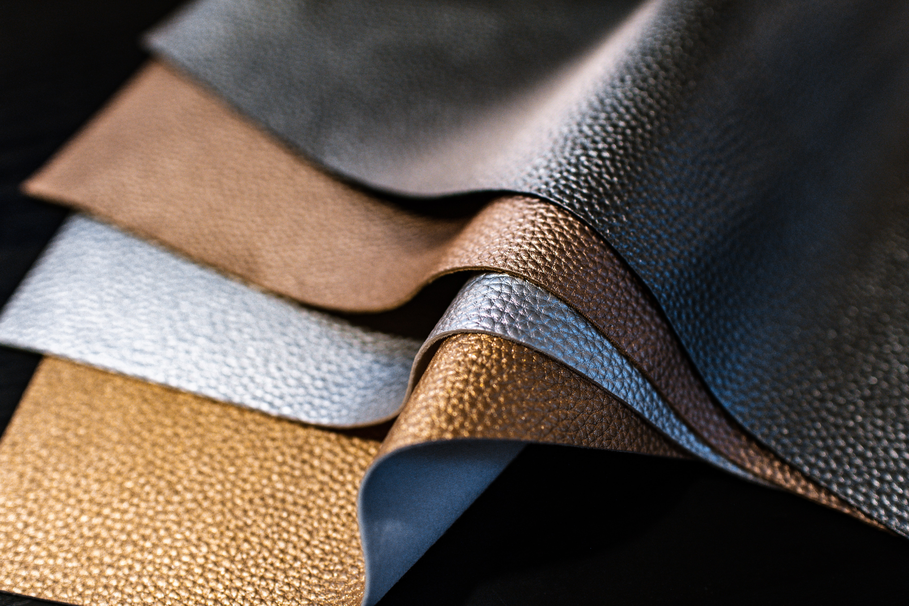

In this article we will learn about the source and special properties of chrome tanned leather, how it is made, what kind of products it is used in, and how to care for this type of leather. We will also look at the advantages and disadvantages of chrome tanned leather and discuss similar leathers.
